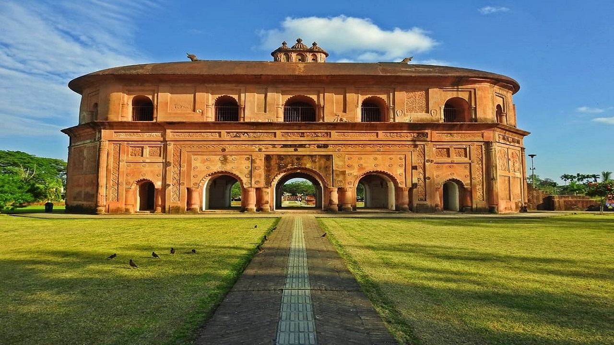

About Rang ghar: The Rang
Ghar is a two-storeyed building which once served as the royal
sports-pavilion where Ahom kings and nobles were spectators at games
like buffalo fights and other sports at Rupahi Pathar (pathar
meaning "field" in Assamese) - particularly during the Rongali Bihu
festival in the Ahom capital of Rangpur. It is three kilometres (1.9
mi) away from the center of Sivasagar Town. Situated by the side of
the Assam Trunk Road, it lies to the northeast of the Rangpur
Palace, a seven-storied royal complex comprising the Talatal Ghar
and the Kareng Ghar.
History of Rang ghar:
Ranghar is said to be one of the oldest surviving amphitheaters in
Asia, the building was first constructed during the reign of
Swargadeo Rudra Singha with bamboo and wood. It was later rebuilt
with brick by Swargadeo Pramatta Singha in 1744 - 1751 A.D.
Architecture:
The roof of the Rang Ghar is shaped like an inverted
royal Ahom long boat. The base of the monument has a series of
arched entrances, while atop the roof sits a decorative pair of
carved stone crocodiles. Many of the arched entrances have retained
little more than their brick framework, with mere vestiges of
sculptural adornments here and there. The Ahoms, who used special,
thin, baked bricks, did not use cement but a paste of rice and eggs
as mortar for their construction, a pulse called Maati Maah and a
fish named Borali Mach in Assamese. They also made use of powdered
mixed lime and bricks to cover the surface of the inner walls. It is
said that this layer of powder used to keep the inside of the Rang
Ghar cool. The adjoining field, known as Rupohi Pothar, wore a
festive look when games like bull-fight, cock-fight, elephant fight,
wrestling, etc., were held on different occasions during the Ahom
rule. Rang Ghar, besides standing as the royal pavilion, also
contributed in spreading the games to different parts of the kingdom
and its neighbouring States. About a kilometer to the northeast of
the Rang Ghar is the Joysagar Pukhuri. This is a man-made tank,
encompassing an area of about 120 bighas of land. It was dug in
memory of Joymoti Konwari, mother of Rudra Singha (1665 – 1714) -
the most illustrious of the Ahom kings.
